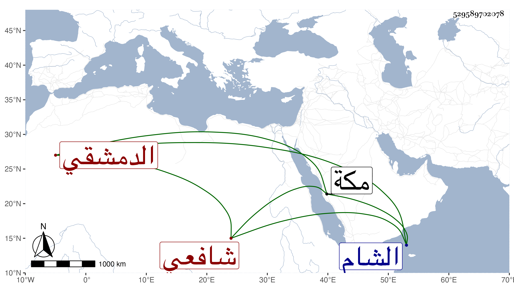

0902Sakhawi.DawLamic.ITO20230111-ara1.EIS1600.529589702078
Biography ID: 529589702078
ابن الفرفور محمد بن محمد بن يوسف الدمشقي شافعي ومحمد بن صدقة بن خليل والكمال محمد بن الزين عبد الرحمن بن الصاحب الفرفور وينظر إن كان من هذا القرن وابنته ططر وهي أم الكمال بن البارزي والشهاب أحمد بن محمود بن عبد الله قاضي الشام وأبوه مات بمكة في شوال سنة إحدى وسبعين مع الرجبية وصل نسبه بالعماد اسماعيل بن إبراهيم بن الفرفور المذكور في الدرر .
